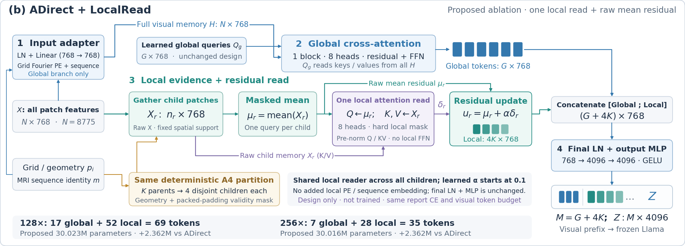
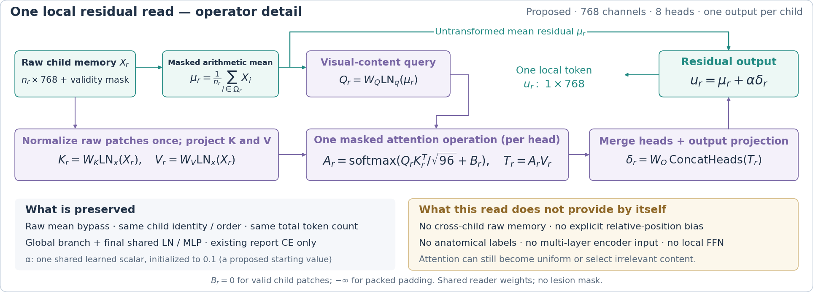

ADirect：从固定均值走向有选择的空间证据压缩
2026-11-01 · 基于正式 A/A4/ADirect 与 6 个外部 baseline 的本地结果、当前模型代码、既有负结果。本页是候选设计，不代表已完成训练实现。
ADirect 已经证明“原始局部特征直达”值得保留。脑区差距更可能涉及均值前后的信息选择、局部内容与空间位置的对应，以及解剖上下文的使用。 单次局部残差读取是干净的机制对照，其优先级不等于已证明成功率最高。TokenSelect 与 Perceiver 提供了两条同样重要的替代路线：直接保留代表 patch，以及让空间 token 重新读取更广的原始视觉上下文。
Overview PDF · 算子细节 PDF · 精确候选规格 · 完整实验错误分析

同样 CE 为什么不等于同样的信息学习能力。 CE 通过各自不同的前向结构和梯度路径训练 projector 与视觉 LoRA。只看 ADirect 的局部支路，μr=mean(Xr)，因此同一区域每个 patch 获得的直接梯度都是 (1/nr)·∂L/∂μr；全局支路和 encoder 内部还会提供其他梯度，不能说整个模型每个 patch 梯度都相同。学习到的内容读取允许不同 patch 的梯度、聚合权重随当前输入变化，改变了同一 CE 可利用的信息与优化路径。
以当前 8775 patch 网格为例，ADirect-256 的 28 个 local token 每个平均 313.4 个 patch，最小 228、最大 560；128× 的 52 个 local token 每个平均 168.75 个 patch。256× child 的物理范围沿 D/H/W 分别约为 76–80 / 48–64 / 48–112 mm。这些是几何 box 而不是脑区。encoder patch 已有上下文感受野，但 projector 的直接聚合仍把大量不同位置内容合成单个均值。少量异常细节或边界关系可以在这种压缩中被弱化；这是结构风险，并未用病灶体素干预证明是本次全部错误的原因。
侧别与脑区需要的区分粒度不同。保住左右半球的粗差异，未必同时保住额叶/顶叶/颞叶的局部外观、位置和邻接关系。参考脑区也可能复杂、多部位，报告 CE 未要求额外标签；较强 baseline 同样未显式获得 atlas 脑区标签。因此不能把“没有医学知识模块”当作当前差距的直接解释。
Perceiver 的结果不能被概括为“它只多了残差”。 原始 Perceiver 论文强调迭代压缩读取，但当前比较以本地实现为准：resampler.py、QueryBlock、depth=6 配置。论文背景见 Perceiver, ICML 2021。本地各模型的视觉 LoRA 已分别协同训练，结果不是固定 encoder 下单独 projector 的因果消融。
单次局部残差读取的准确含义。 r 是 A4/ADirect 的一个空间 child；μr 保留原样，同时产生当前区域自己的 query。原始 patch 在计算均值后仍保留下来，作为 K/V memory。
μr = masked_mean(Xr)
Qr = Wq LNq(μr)
Kr = Wk LNx(Xr)
Vr = Wv LNx(Xr)
Ar = softmax(Qr Krᵀ / √96 + padding_mask) # 每个 head
δr = Wo concat_heads(Ar Vr)
ur = μr + α δr
Z = head(final_LN(concat(global, all ur)))
此版明确限定：768 维、8 heads、1 次 attention、没有 local FFN；Q/K/V/O 无 bias；两个 affine LN；全体 child 共用参数和单个可学习 α，α 初始化 0.1。0.1 是候选起点，不是调出的最优值。新增 2,362,369 参数，总参数约 30.023M/30.016M，总 token 仍为 69/35。残差不是人工提供的“正确误差”，而是 CE 学出的特征修正。图中 query 来自区域视觉均值，没有角色 query、UMLS 或脑区标签。

预期收益来自“重新看到未平均的 patch 并选择其内容”。 假设一个 child 有 300 个 patch，只有少数 patch 携带区分某个脑区的边界/病变特征，均值给每个 patch 同样的权重；attention 可以按内容赋予不同权重，让这些信息更容易影响最终 token。μr 的直通保留现有粗内容，避免所有证据都必须通过新 reader。但 residual、LN 和 head 都可以改变最终输出，保留旁路不保证准确率不会下降。
这个思路与 TokenPacker 的 coarse-to-fine 区域注入有联系。论文还使用多层特征；本候选只读取当前 encoder 最后一层，不能把论文的全部收益视作本实验依据。
为什么优先：变量少，失败也能缩小问题范围。 它保留相同 child、G/L、head 和训练目标，检验内容自适应聚合是否优于固定均值。LocalPacker-128 的脑区/联合是 47.8%/38.4%，ADirect 为 37.2%/26.8%，提供动机；但 LocalPacker-256 的联合 31.3% 与 ADirect 32.1% 接近，而且其分区/预算不同，这不是单层 attention 的因果证据。
局限必须写进预期： 不显式加入坐标的 mean-query attention，对同一区域内已经编码好的向量排列仍不敏感；它不会凭空恢复精确空间顺序。硬局部 support 也没有补充跨 child 的原始解剖上下文。权重可能接近均匀，或者选择与脑区无关的内容。若主要瓶颈在区域边界、跨区关系或组内位置，此版可能收益很小。
既有负结果也不能忽略：旧 AvgPool warm-start 的内容加权、空间一阶矩、八子区残差，在冻结 encoder 的 96 步实验中均无稳定联合收益。旧内容 scorer 是共享线性标量，读取归一化 patch，未用当前区域视觉均值作 query；此版多头内容 query、完整训练/视觉 LoRA 的条件不同，所以旧结果不能直接否决它，也足以阻止把收益说成必然。来源：既有空间候选实验。
除局部残差之外，最值得尝试的结构路线。 以下每一行都是独立实验，不建议一次性堆叠。
以 256× 为例，覆盖 + 代表 patch 可以直接比较 28 均值 + 7 global 与 28 均值 + 7 selected raw patch；这比额外增加 token 更便于解释。若后续叠加局部 reader，应先证明两个独立替换各自有效。
如果完全重做，建议探索“空间锚定读出”。 用 M 个有固定空间身份的区域均值初始化 queries，各 query 先读当前/邻接区域的原始 patch，通过一次带相对位置偏置的读取得到 M 个输出，再接现有 head。这一候选将全部输出预算用于可追踪的空间锚点，又借鉴 Perceiver 的内容选择和较广的 memory 访问。它仍不需要脑区标签或新 loss。
固定 M 个空间锚点 → μr
ur = μr + α Attention(Q(μr), K(X_neighborhood), V(X_neighborhood), position_bias)
Z = shared_head(final_LN([u1, ..., uM]))
这是最终候选方向，不能把全部差异与 ADirect 一次比较就归因于 attention：要分别检查 all-local 预算、同区 vs 邻域 support、位置 bias。若固定区域覆盖本身不够，可以将覆盖 + 代表 patch 作为另一条独立路线，而非把全部模块都堆到这个候选上。
建议下一轮用少量实验回答明确问题。 先做 ADirect、ADirect+LocalRead、ADirect 的 global→selected 替换三组；如果愿意增加一组，则加同 M 的 all-local 均值。所有模型沿用原 report CE、相同预训练 encoder/LLM 起点、视觉 LoRA 策略、训练数据和 best-val-CE 规则，记录实际最佳更新步数。保持测试集仅作探索性核查，结构与超参数选择使用患者独立验证集。
验收不仅看 GREEN：同时要求脑区和联合位置有所改善、侧别不出现明显回退、遗漏 finding 不恶化。对 reader 记录 ||αδ||/||μ||、关闭分支后的生成/位置变化；attention 熵降低不能单独证明选择了有效证据。对 selected 记录空间覆盖和跨患者的稳定性，不把“特征差异大”称为“病灶概率高”。若多次有效细节读取仍无法改善脑区，再把跨区域上下文或有序压缩提高优先级；本阶段不引入泛化的额外损失或外部解剖标注。
解释边界。 此次证据能定位值得测试的信息处理差别，还不能给出“缺一个组件”的唯一因果答案。模型参数量、early stopping 步数、encoder LoRA 协同适配和单 seed 波动都存在；CE 相同只固定了训练目标，没有固定最终学到的表征。